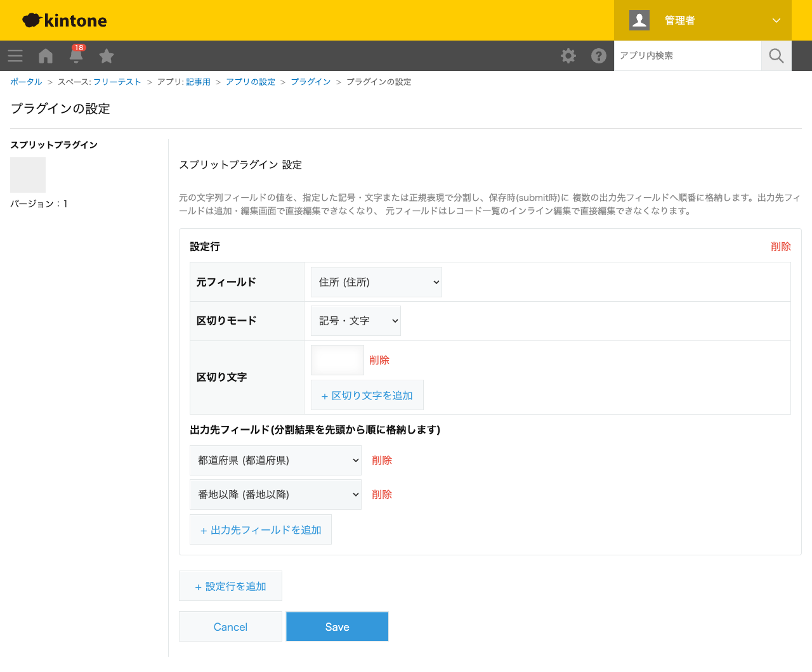
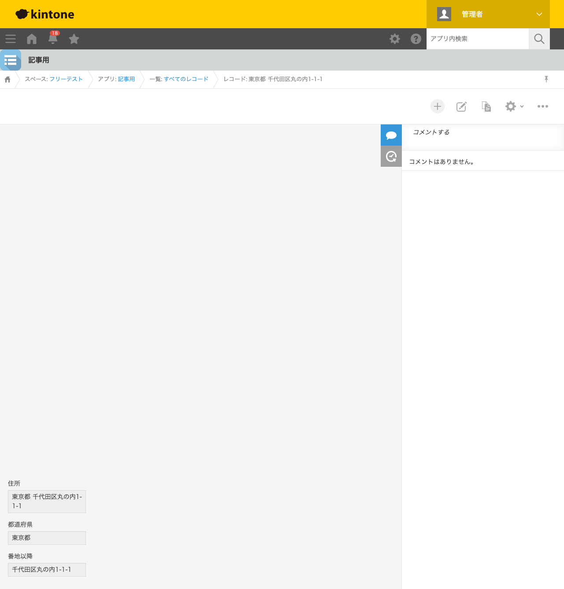

GovAppsプラグイン 安全性を確認できる無料kintoneプラグイン集
住所を1つのフィールドにまとめて入力していると、「都道府県だけで絞り込みたい」「市区町村ごとに 集計したい」といった場面で不便になります。この記事では、無料プラグインで文字列フィールドの値を 区切り文字で分割し、複数のフィールドへ自動で振り分ける方法を、実際の設定画面と分割結果つきで 解説します。
kintoneの標準機能には、1つの文字列フィールドの値を区切り文字で分割して複数フィールドへ 振り分ける機能はありません。計算(CALC)フィールドの文字列関数でも、部分文字列の抽出は できても「区切り文字で可変個数に分割する」処理は組めません。JavaScriptカスタマイズを 自作すれば実現できますが、分割結果が出力先フィールドの数より多い・少ない場合の扱いや、 元フィールド・出力先フィールドの編集制御まで含めると簡単な作業ではありません。
「文字列を区切り文字で分割して複数フィールドへ格納する」機能を用意する方法は、大きく4つ あります。それぞれの向き不向きをまとめました。
| 方法 | 向いている場合 | 注意点 |
|---|---|---|
| kintone標準機能のみ | 分割せず1フィールドのまま運用できる場合 | 分割・振り分け機能自体が無い |
| JavaScriptを自作する | 社内に開発者がいて、独自の分割ルールが必要な場合 | 可変長の割り当てロジック・編集制御の実装・保守が必要 |
| 有料の他社プラグイン | 予算があり、手厚いサポートを求める場合 | 月額課金が発生する。ソースコードが非公開で、外部通信の有無を利用者側で確認しにくいことが多い |
| GovAppsプラグイン(このプラグイン) | 無料で試したい、社内・庁内でセキュリティを確認してから導入したい場合 | 分割結果が出力先より多い場合、はみ出した分は切り捨てられる |
GovAppsのプラグインはすべて無料・広告なしで、追加課金なしで使い続けられます。 ソースコードはGitHubで全公開しているオープンソースなので、 「本当に外部と通信していないか」を自治体・企業のセキュリティ担当者自身の目で確認できます (このプラグインも個別ページにセキュリティレビュー結果を掲載しています)。
スプリットプラグインは、元フィールド・区切りモード・ 区切り文字・出力先フィールドの並びを設定するだけです。今回は「住所」(元フィールド)・ 「都道府県」「番地以降」(出力先フィールド、いずれも文字列1行)を持つアプリで設定しました。
)を追加しました
(正規表現での指定も選べます)。

「住所」に「東京都 千代田区丸の内1-1-1」(都道府県と番地以降を半角スペースで区切った文字列) を入力して保存すると、「都道府県」フィールドに「東京都」、「番地以降」フィールドに 「千代田区丸の内1-1-1」が自動的に格納されます。

出力先フィールド(都道府県・番地以降)はレコード追加・編集画面で編集不可になっており、 分割結果以外の値が手入力で紛れ込むことはありません。区切り文字が住所に含まれていない場合は、 2つ目以降の出力先フィールドが空文字列でクリアされます。
submitイベント)にのみ実行されます。入力中にリアルタイムで分割結果が表示されるわけではありません。